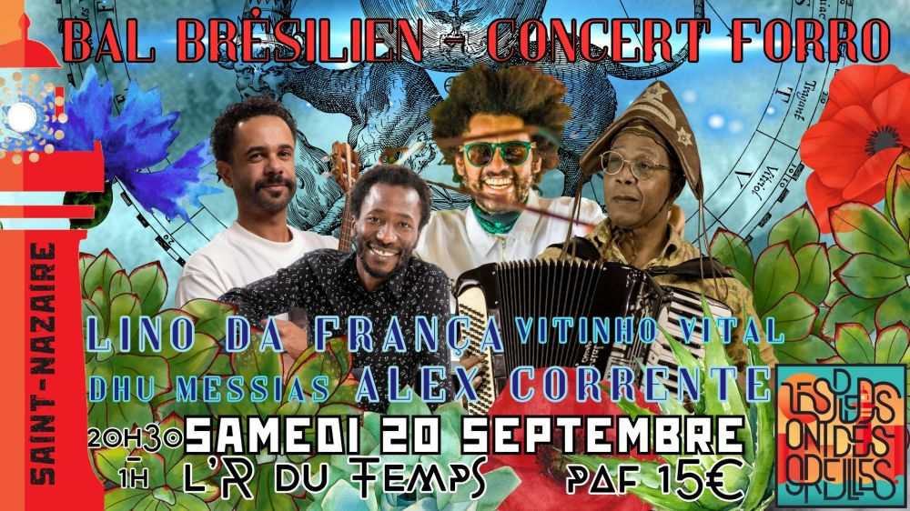

20 sept: Gros concert forró : Alex Corrente et Lino da França, à Saint-Nazaire

Deux artistes majeurs de la scène forró brésilienne seront parmi nous, directement venus du Brésil pour enflammer la piste :
🌿 Lino Da França – accordéoniste et chanteur, porteur de la tradition forrozeira avec une sensibilité unique.
🌸 Alex Corrente – chanteur et joueur de triangle, charismatique et solaire, dont la voix vous fera voyager au cœur du Nordeste.
À leurs côtés, deux musiciens talentueux complètent ce quatuor explosif :
🌼 Dhu Messias à la zabumba, rythmique ancrée et entraînante
🌙 Vitinho Vital au cavaquinho, qui apporte ses harmonies lumineuses au groove irrésistible
Un moment rare, un bal vibrant, une fête au parfum d’ailleurs… Que vous soyez danseur·se ou simplement curieux·se de découvrir cette musique envoûtante, cette soirée est pour vous 💫🌿
✨🌙 INFOS PRATIQUES 🌙✨
📍 Lieu : Bar L’R du Temps, Saint-Nazaire
📅 Date : Samedi 20 septembre 2025
🕢 Heure :
→ 20h30 : Initiation à la danse forró – accessible à tou·te·s, sans partenaire nécessaire
→ 21h : Concert-bal forró avec nos quatre musiciens
🕐 Fin : 1h du matin
🍷 Bar sur place – ambiance conviviale et bienveillante assurée 🌺
🌌 Invitez vos ami·e·s, venez danser sous les étoiles, et laissez-vous porter par la magie du forró brésilien à Saint-Nazaire !